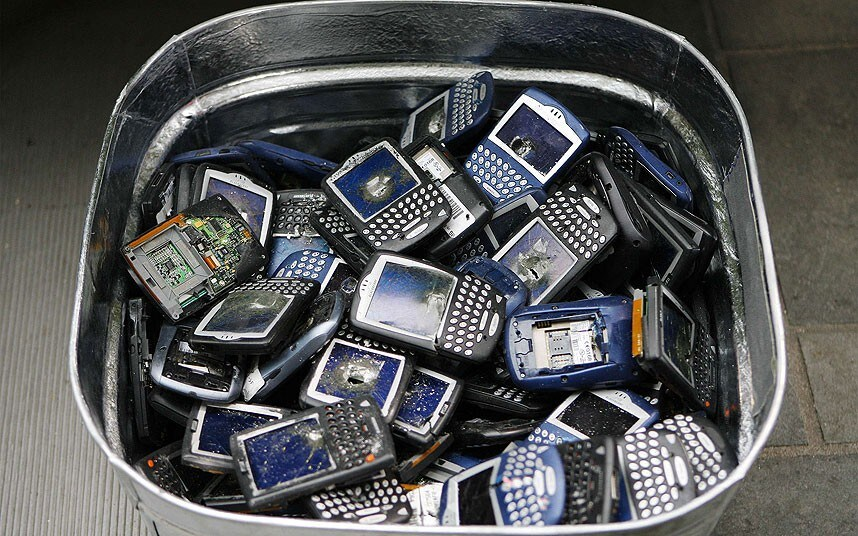

Nos meilleures erreurs … de (Cyber)Sécurité
Dominique Derrier
Pierre Le Calvez
Dominique Derrier | who0


| Officiellement |
… |
| 0x19 XP |
OpenSource |
| Neotrust |
|
| vCISO |
CTF Builder/runner |
| iso27001 & NIST |
ESP32, Docker, Vim |
Pierre Le Calvez


| Officiellement |
… |
| 0x14 XP |
ex-Pentester 💀 |
| CGI |
Incident Response enthusias 💣 |
| Vice-Président Cybersécurité |
Amateur Mountain Climber 🏔 & Skimo Fan ⛷️ |
|
|
Disclaimer

👉 Les histoires sont toutes vraies ;
👉 C’est drôle mais on ne
se moque pas ;
👉 On se veut bienveillant ;
👉 On peut apprendre
de l’erreur des autres ;
👉 Attention certaines sections sont NSFW
;
👉 Aucun #LLM n’a pas été maltraité durant la production de ces
slides.
Participez
La fraude téléphonique ☎️ (Pierre)
 Une
compagnie vous appelle pour l’aider pendant une fraude téléphonique. En
effet, elle s’est rendu compte de la mise en place d’une redirection
téléphonique vers un numéro surtaxé (que vous maîtrisez).
Une
compagnie vous appelle pour l’aider pendant une fraude téléphonique. En
effet, elle s’est rendu compte de la mise en place d’une redirection
téléphonique vers un numéro surtaxé (que vous maîtrisez).
Le client
a déjà subi 20 000 $ de fraude pendant le week-end et vous demande un
devis pour l’aider.
La fraude téléphonique ☎️ (Pierre)
Shit in the fan (Dominique)
Le patching… une histoire d’amour entre les Rouge, les Bleus, White.
Pour des raisons de repotring, le gestionnaire de projets à eu accés à
l’insterface de patching.
Shit in the fan (Dominique)
Le Blackberry (Pierre)
 Mais
où sont jeté les anciens téléphones ? Dans les poubelles bien sûr…
Et à votre avis … dans un telephone il y a quoi ?.
Le Blackberry (Pierre)
Ressource saturée (Dominique)
A la belle époque ou 21 et le 20 était la meilleure solution pour
échanger de fichier. Le monitoring sonne à 2h du matin.
DeLock BitLocker GPO (Pierre)
Optimisation via GPO. Chiffrement + dechiffrement tous les jours.
Optimisation SSL (Dominique)
Les certificats SSL, le plaisir de l’administratif à l’installation.
Pour simplifier les équipes ont décidé de faire des
*.nomsdedomaine.com
Optimisation SSL (Dominique)
…
Mais il y a quoi sur le réseau ? (Pierre)
La lettre de
mandat est signée, le test est planifié, l’équipe lance la phase de
reconnaissance dans l’entreprise.
Comme c’est le premier test,
l’équipe rouge sait qu’elle va trouver des surprises.
Darknet (Dominique)
Le DarkNet, il parait qu’on peut trouver tout l’information du monde
pour qui sait chercher.
Rien de telle qu’un demo devant le pdg.
Darknet (Dominique)
Mots de passe (Pierre)
Pentest
Un pentest qui fonctionne bien, les gars sont rentrés et on dumpé un
malware sur un serveur pour take down le domain.
Pentest
Le postit du président (Pierre)
Voute de mot de passe
Raid (Dominique)
A une époque ou les machines physiques étaient notre quotidien … bien
loin de la virtualsation, des containers et du cloud. Un disque tombe en
failure … appel du support, ouverture du care-pack.
Raid (Dominique)
Le phishing (Pierre)
 La
sensibilisation par le phishing est l’un des premiers outils de
sensibilisation marquants pour les équipes et les entreprises de toute
taille qui utilisent l’informatique.
La
sensibilisation par le phishing est l’un des premiers outils de
sensibilisation marquants pour les équipes et les entreprises de toute
taille qui utilisent l’informatique.
Comment une
sensibilisation par phishing peut-elle vraiment mal tourner ?
Le phishing
Le mot de la fin …
Même si
👉 l’amélioration continue ;
👉 l’intelligence
artificielle ;
Les questions de sécurité ne vont pas
disparaitre et les erreurs humaines ne vont pas s’arrêter.
Si l’on
ne veut pas continuer à apprendre de ses erreurs, une dose d’humour dans
l’amélioration continue est nécessaire pour avancer.